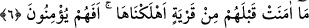

Mesnevî sâhibi de şöyle der:
Evliyanın yüce kerametlerindendir
Başlangıcı şiirdir, şiir görünür ama sonu kimyadır
Bundan maksad vezinli söz yazma kudretidir. Yoksa vezinli söz söylemek onun
gereklerinden değildir.
Sanki şöyle denilmiştir: “Eğer dediğimiz gibi değilse, bilakis Allah’tan bir elçi/rasûl
ise “bize hemen, öncekilere gönderilenin benzeri bir âyet” yâni öncekilere gönderilen
(beyaz) el, asâ, ölülerin diriltilmesi, deve ve benzerleri apaçık bir mûcize “getirsin”
de ona inanalım “dediler.”
6. Bunlardan önce helâk ettiğimiz hiçbir belde îman etmemişti; şimdi bunlar mı
îman edecekler?
“Bunlardan” Mekke müşriklerinden “önce” istedikleri mûcizeler geldikten sonra
îman etmemelerinden ötürü “helâk ettiğimiz hiçbir belde” halkı “îman etmemişti;”
“Karye”; insanların toplandığı yerin adıdır.
“Şimdi bunlar mı îman edecekler?” yâni helâk olan ümmetlerden hiçbiri istedikleri
âyetler/mûcizeler kendilerine verildiği zaman îman etmedi. Onlar inanmadı da,
suallerine icabet edilse ve istedikleri verilse bunlar mı inanacaklar?! Halbuki bunlar
onlardan daha küstah ve daha azgın idiler. Nitekim Allah Teâlâ şöyle buyurmaktadır:
“Şimdi sizin kâfirleriniz, onlardan daha mı iyi? Yoksa kitaplarda sizin için bir
berât mı var?” (el-Kamer, 54/43) Yâni sizin kafirleriniz şu sayılan Nuh, Hûd, Sâlih ve
Lût (a.s.)’ın kavminin kâfirlerinden ve Fir’avn âilesinden daha mı iyi? Onlar bu
âyetlerin/mûcizelerin gelmesini taleb etme konusunda kendi eliyle kendi mezarını kazan
kimse gibidirler.
Hassân b. Sâbit (r.a.) şöyle der:
Bir koyun gibi olma ki onun ölümü,
Başkasının kazmasına razı olmayıp kendi kazmasıyladır.
Bu hikâyenin aslı şudur: Bir adam, bir koyun buldu ve onu kesmek istedi. Fakat bıçak
bulamadı. Koyun bir yere bağlıydı. Durmadan ayaklarıyla toprağı eşeledi. Sonunda
toprağın altında gömülmüş olan bıçağı ortaya çıkardı. Adam da o bıçakla koyunu
boğazladı. İşte bu söz, sahibini helâke götüren ve tehlikeye atan şey için darb-ı mesel
olmuştur.
Burada Allâh’ın onların istediklerini getirmemesinin kendileri için rahmet olduğuna